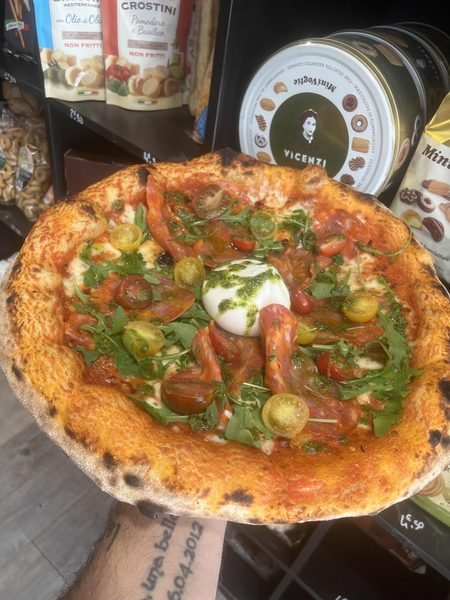
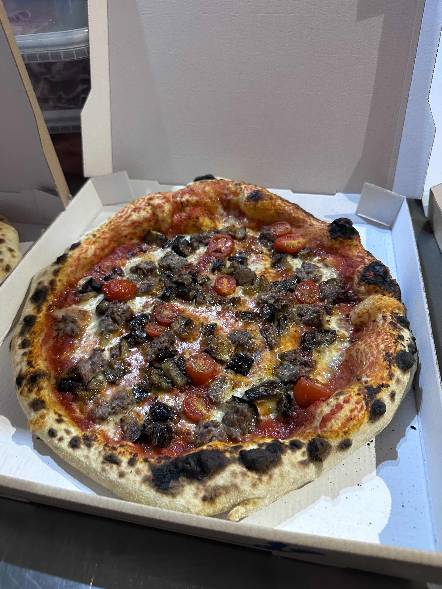

01
Authenticité
Un chef originaire de Sicile, des produits importés directement d'Italie. Ici, rien n'est approximatif — et surtout pas le goût.

Tony est originaire de Sicile. Avec Cindy, ils partagent la même vision : une cuisine italienne authentique, sans compromis sur la qualité des produits.
Ensemble, ils ont créé CasaMia pour partager cette passion avec le Vaucluse.
Distingués Tables & Auberges de France
Plus qu'un nom, c'est une promesse : vous accueillir comme à la maison, dans la chaleur et la générosité de la tradition sicilienne.
Chaque produit est choisi avec soin. La farine italienne Caputo double zéro (00), les tomates napolitaines, l'huile d'olive extra-vierge, la charcuterie artisanale — tout est importé directement d'Italie (Naples, Pouilles).
De la pâte étalée à la main — haute hydratation, longue fermentation — aux desserts faits maison, chaque assiette raconte un morceau de notre histoire.
Un chef originaire de Sicile, des produits importés directement d'Italie. Ici, rien n'est approximatif — et surtout pas le goût.
Farine de blé italienne Caputo double zéro (00), tomates napolitaines, mozzarella Fior di Latte, huile d'olive extra-vierge. Notre pâte repose en haute hydratation et longue fermentation pour un moelleux qui ne triche pas. Chaque ingrédient est choisi pour son excellence — jamais pour son prix.
CasaMia, avant tout, c'est une famille — la nôtre. Avec notre fille Chiara, nous vous accueillons avec le sourire, la générosité et la convivialité qui font l'âme de la cuisine italienne.




Tony, Cindy et notre fille Chiara vous accueillent dans nos deux pizzerias du Vaucluse, avec la chaleur sicilienne et la même exigence.